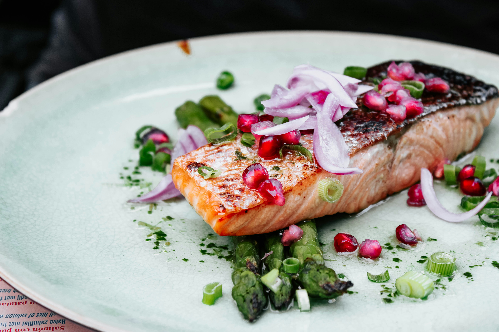

Home
Garlic Salmon

Description
This garlic salmon fillet recipe is steamed in foil and cooked either in
the oven or barbecue. It's also seasoned with fresh baby dill, lemon slices,
fresh ground pepper, and green onions.
Ingredients
- 1 ½ pounds salmon fillet
- salt and pepper to taste
- 3 cloves garlic, minced
- 1 sprig fresh dill, chopped
- 5 slices lemon
- 5 sprigs fresh dill weed
- 2 green onions, chopped
Steps
- Preheat the oven to 450 degrees F (230 degrees C). Spray two large
pieces of aluminum foil with cooking spray.
- Place salmon fillet on top of one piece of foil. Sprinkle salmon with
salt, pepper, garlic, and chopped dill. Arrange lemon slices on top of
the fillet and place a sprig of dill on top of each slice. Sprinkle
fillet with chopped scallions.
- Cover salmon with the second piece of foil and pinch together the foil
to seal tightly. Place on a baking sheet or in a large baking dish.
- Bake in the preheated oven for 20 to 25 minutes until salmon flakes easily.